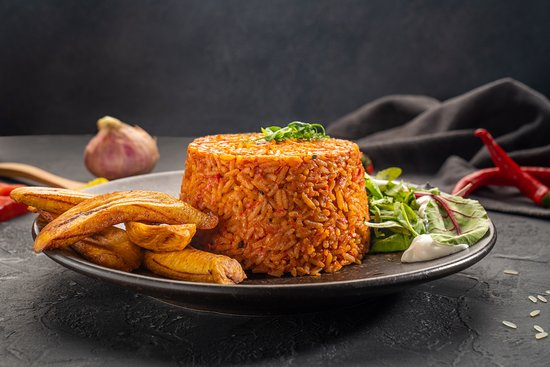

JOLLOF RICE
This African dish is packed full of flavor, rich, grainy, smoky, delicious, and the best.
It's a one-pot dish that is made with rice, tomato, peppers, herbs, and spices.
There are different variations of West African Jollof rice including the Nigerian jollof rice, Senegalese, Liberia, and Ghana jollof rice.
It has been an intense war about who has the best jollof rice but I would like to clear that and confirm that Nigerian jollof rice is the best.

NIGERIAN JOLLOF RICE RECIPE
This Nigerian jollof rice recipe is the best you will find on the internet.
It is a detailed step-by-step process that simplifies the cooking process so that anyone be it a beginner cook or pro cook can cook it to perfection.
With this smoky party jollof rice recipe, you will get red (orangey) colored, flavorful, delicious rice that can be served for parties, or eaten as lunch, or dinner.
In fact, no party is complete without jollof rice. It is always the star of the party.
INGREDIENTS FOR JOLLOF RICE
- 3red bell pepper
- 3 Plum tomatoes
- 1 medium onion
- 2 scotch bonnet
- 3/4 cup oil
- 1 medium onion sliced
- 5 Tbsp tomato paste
- 4 cloves garlic
- 1 Tbsp ginger Grated
- 2 bay leaves
- 1 Tbsp thyme
- 1 Tbsp curry Powder
- 1 Tsp salt or add to taste
- White Pepper or black pepper to taste
- 1 Tbsp chicken bouillon powder or 3 cubes
- 6 Cups rice Long grain
- 4 Cups chicken stock
HOW TO PREPARE NIGERIAN JOLLOF RICE
- First, make the tomato-based sauce by blending together the red bell peppers,
(pimento), tomatoes, scotch bonnet, and onion.
- Heat the cooking oil in a large pan. When the oil is hot, add the diced onions and
cook for about 3 to 5 minutes, or until the onions are soft.
- Next, add the tomato paste and fry for about 5 minutes. Then add the garlic, ginger,
and bay leaves and let it cook in the tomato paste for about 2 minutes.
- Add the blended sauce and allow the pepper to cook until the water is reduced
entirely and the oil is seen floating on the fried pepper—about 15 minutes.
- Season with thyme, curry powder, salt to taste, white pepper, and seasoning cubes.
Cook for another 2 to 5 minutes.
- Stir the rice into the sauce until it is well coated. Then add the chicken stock,
stir, and cover with a tight-fitting lid, and then bring to a boil over high heat.
- Once it begins to boil—after about 3 to 5 minutes, reduce the heat immediately
to low and steam until the rice is done—about 30 minutes.
- Serve with sweet fried plantains, roasted chicken, or salad.